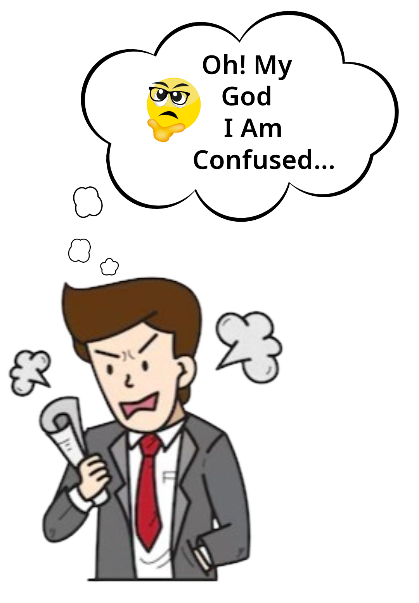
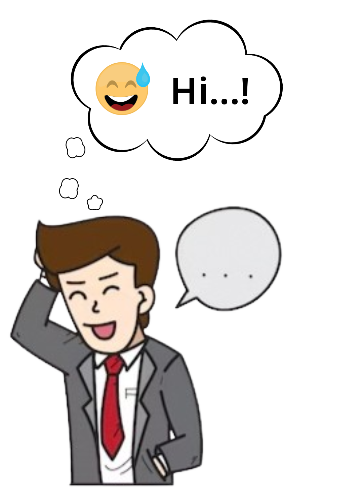

PASSCRACK
Test your password strenght
How To Create A Password?
scorl down üëá


The Most Common Poor Password Practices

Create Easy Passwords

Reuse Passwords

Sharing Passwords Insecurely
Writing Passwords Down,
or Storing on Spreadsheets
or on your Phone
Skip Adopting MFA

Letting Browsers Save
Passwords
About This PASSCRACK
Is it actually safe to use Password Checkers?
- If you’re reading this section, then good – the quickest way to get hacked online is to be too trusting or assume websites are automatically safe.
- It’s good to be cautious and it’s never a good idea to enter your legitimate credentials into any website you are not confident about.
- The ones to watch especially are those who ask you to input your credentials.
So, why is this Passcrack safe?
- The passwords you type never leave your browser and we don’t store them (You can disconnect your internet connection and then try it if you wish)
- All the checking is done on the page you’re on, not on our servers
- Even if the password was sent to us, we wouldn’t actually know who you were anyway – so couldn’t match it up to any usernames or any websites you may visit
- We’re in the business of making people more secure online and the last thing we want to see is passwords being transmitted across the internet insecurely.

How does Passcrack work?
- A password strength calculator evaluates the robustness of passwords using various techniques. It leverages common password dictionaries, regular dictionaries, and databases of first and last names to detect weak patterns. Additionally, it performs substitution attacks, which simulate typical user behaviors, such as replacing letters with numbers or symbols—examples include replacing 'A' with '4' or '@', 'E' with '3', and 'I' with '1' or '!'. Hackers commonly exploit these substitutions, as they are among the first methods used in password-cracking software.
- The calculator also checks for sequences of characters, such as "12345" or "67890," and identifies predictable keyboard patterns like "qwerty" or "asdf." Furthermore, it evaluates passwords for repeated characters or groups, such as "aaa" or "abab," which can significantly weaken security. Advanced tools take this a step further by comparing your password with personal information, such as your name, mobile number, date of birth, or other identifiable details, to assess whether it includes easily guessable elements.
- By analyzing these aspects, the calculator provides an overall strength score, guiding users to create more secure and harder-to-guess passwords.